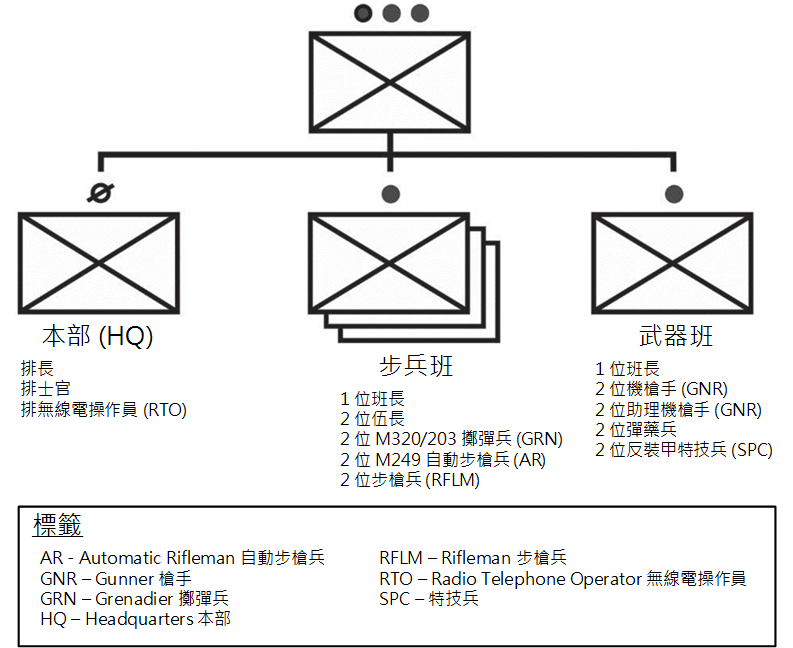
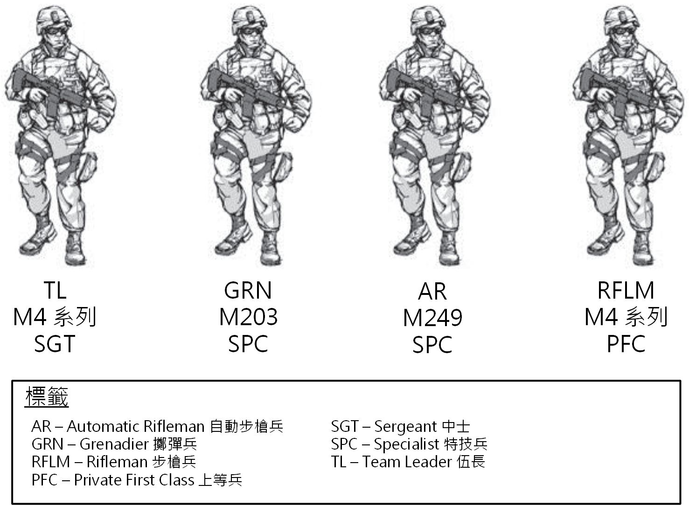
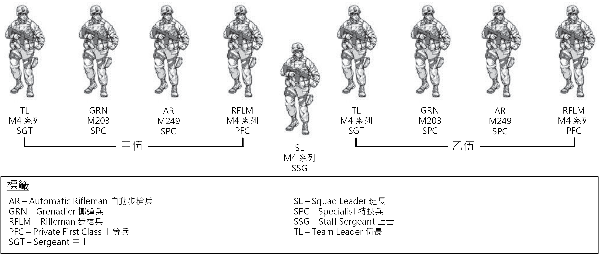
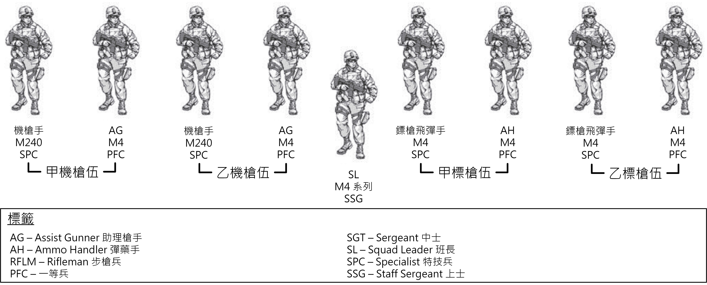

美國陸軍技術出版物 3-21.8 - 步兵排與班
本文件翻譯自「美國陸軍技術出版物 3-21.8 - 步兵排與班 (US Army Techniques Publication 3-21.8 - Infantry Platoon and Squad)」。 此文件為美國陸軍公開文件，可以在美國陸軍的官方網站找到。 文件在 2016 年公開。 內容為美國陸軍長年累積之經驗而成，作為現今最基層的單位之中，步兵班與排的基本守則。 閱讀此書可以獲得對美陸軍最基本單位佈署的認識。
因為翻譯此文件為個人興趣，無法保證何時會翻譯完。 我翻譯的時候照我有興趣的章節優先進行翻譯，因此很有可能這份文件大多數的章節永遠不會被翻譯出來。
本翻譯文件是使用 Markdown 撰寫，使用 mdBook 編譯而成，並使用 Travis CI 自動發佈於本站。
有任何問題歡迎到 Github 上的 issues 提問！
用詞
基本上用詞的部分我盡可能地遵照「中華民國陸軍」的用詞進行翻譯。 若沒看過的詞我會優先上網搜尋，再沒有查到結果的話，則以個人感覺順暢為優先。 我所使用的專用名詞翻譯可以參考 附表。
本書簡介
陸軍技術出版物 (ATP) 3-21.8 廣納了步兵、史崔克與裝甲旅級戰鬥隊 (I、S 與 ABCT) 的步兵排與班的技術。 它取代了陸軍戰場手冊 (FM) 3-21.8 (發布於 2007 年三月)、陸軍戰術技巧與程序 (ATTP) 3-21.71 (發布於 2010 年三月) 與 ATTP 3-21.9 (發布於 2010 年十二月)。 ATP 3-21.8 提供了理論指導；描述排與班之間的關係；定義組織角色和職能、能力、局限性；並列出了排與班在統一地面作戰中的職責。 步兵排和班是全天候、全地形的單位。 在這種背景下，步兵排和班必須準備好適應各種環境下各級的衝突與和平。 這需要大膽、積極、足智多謀及適應性強的領導者 - 具有品格、能力和承諾的領導者 - 願意 承擔已知風險來完成任務。 步兵領導者必須拿出他們的主動並迅速做出決定以利用意料外的機會。
本出版物介紹了陸軍理論用語、概念的主要變化以及構建和證明有效的策略、技術和程序 (TTPs)。 下列段落總結了各章節：
第一章 - 組織：
- 提供針對步兵排與班所處的作戰環境的簡要說明。 關於統一地面作戰概念的簡介、作戰結構、戰爭法、交戰規則 (ROE) 與戰鬥力。
- 說明步兵排與班的腳色與作戰上的特質，以訓練來進行進攻、防守與穩定作業。
- 說明作為史崔克步槍連、步槍連與裝甲機械化步兵連的連隊作戰方式。
- 描述在所有三種旅級戰鬥隊 (Brigade Combat Teams, BCTs) 之中，步兵排與班級別的作業組織、任務、能力與限制，以及這些級別之中的個人職務與責任。
第二章 - 進攻：
- 說明進攻的主要目標 - 為了決定性地擊敗、摧毀或是殲滅敵軍勢力，或是為了攻佔重要地形。
- 探討進攻行動以欺騙或分化敵人、剝奪他們的資源或者重要地形、收集情報或是將敵人固定在位置上。
- 描述在防禦任務時，被要求摧毀進攻者並利用勝利的進攻行動。
- 說明進攻任務的以下關鍵 - 指出敵人的決勝點；選擇一種調動形式以避免敵人的強項，同時揭露敵人的弱點；與確保作戰集中了壓倒性的戰鬥力。
- 探討進攻的基礎與序列、計畫考量與用於所有進攻行動的直接和間接火力規劃。
- 以能夠最大化步兵的獨特能力的協調攻擊，以及轉換到其他作戰行動時規劃所需的考量做為結尾。
第三章 - 防禦：
- 說明防禦的主要目的 - 擊退、擊敗或摧毀敵軍的攻擊，並取得進攻的主動權。
- 探討防禦任務的基礎、特性與計畫考量，以及步兵排與班執行的防禦任務所需的直接和間接火力規劃。
- 描述三個防禦工作 - 區域防禦、機動防禦與逆行作戰。
- 說明執行一個防禦時的五步序列。
- 探討防禦的三個基本形式：線性障礙物的防禦、邊線防禦、反坡防禦。
- 說明常見的防禦控制措施。
- 以探討過渡到其他作戰的計畫考量做為結尾。
第四章 - 穩定：
- 探討各式各樣發生在美國之外的作戰時，像是軍事任務、作業與活動之中，與其他國家力量和工具協調的穩定要件。
- 說明 BCT 對穩定任務、基本攻防作業與計畫考量的支援。
- 描述任務指揮作戰作業的執行情況 - 通知、影響和網路/電磁活動、五項陸軍訊息作業的替代 (通知與影響、任務指揮戰、訊息管理、作戰安全 (OPSEC) 與軍事欺騙)。
- 術語訊息接觸、指揮和控制戰與訊息保護被撤除。
- 提供從穩定作業轉換到專注於進攻或防禦作業的探討。
第五章 - 移動：
- 描述在管理與戰術上不同種類的移動。
- 介紹不同種類的移動隊形與技巧。
- 探討路徑選擇、導航輔助與路徑種類。
- 提供穿越不同種類危險區域，以及在危險區域與敵人接觸的技巧。
- 說明在乘坐或沒有乘坐戰鬥車輛時的移動，以及關於任務、敵人、地形和天氣、部隊和可用支援、剩餘時間與民間考量 (METT-TC) 的安全層面問題。
- 以其他移動狀況作為結尾，包括水上與有限的視野時。
第六章 - 巡邏隊與巡邏：
- 提供針對巡邏、巡邏隊的組織、規劃、協調巡邏隊、巡邏計畫、從友軍陣線與集結點出發的概要。
- 說明戰鬥巡邏隊的伏擊、突襲與安全，以及對目標的行動，還有戰鬥巡邏規劃。
- 探討偵查巡邏區、路線和區域、控制措施與針對偵查目標的行動。
- 描述巡邏的準備工作，包括命令、狀況簡報、演練和裝備。
- 指出巡邏後的行動、匯報、裝備檢查與巡邏報告。
第七章 - 維持：
- 說明維持的挑戰，以確保在戰鬥時持續行動。
- 探討步兵排與班 (和它的士兵) 的維持，以確保調動與作戰行動的進行。
- 描述持續預測士兵需求的過程，以確保排與班能持續維持並進行他們的任務。
- 說明預測未來那些對維持行動與保持勢頭來說重要的需求。
- 重點關注排與班的維持行動，包括單位責任、連級訓練行動與維持的作用。
十個附錄補充了此出版物中關於排與班級別的程序。 如下列：
- 附錄 A 描述部隊領導程序 (TLPs) 的過程。
- 附錄 B 描述直接火力計畫與管控。
- 附錄 C 描述間接火力支援計畫。
- 附錄 D 說明安全。
- 附錄 E 描述車輛部署考量。
- 附錄 F 說明機槍部署。
- 附錄 G 描述與說明肩上發射彈藥 (SLMs) 與近戰飛彈系統 (CCMS)。
- 附錄 H 描述障礙排除與部署。
- 附錄 I 涵蓋化學、生化、放射性與核能 (CBRN) 行動。
- 附錄 J 描述 14 個為布拉德利 (Bradley) 與史崔克 (Stryker) 挑選出來的作戰演習。 (譯註：這兩個名稱是裝甲車的種類名稱。)
第一章 - 組織
步兵排與班的主要任務是利用火力與調動等手段接近敵人，以藉由開火、近戰與反擊來摧毀、捕獲或擊退敵人的進擊。 為了成功，步兵排與班積極進取、具備體力、充滿紀律與訓練充分。 步兵單位固有的戰術機動性需要為快速部署做好準備，以響應不同作戰環境中的情況。 本章針對行動的環境提供一個初步的探討，以及針對統一地面作戰提供行動上的概要，並提及地面戰爭的法律。 本章著重於角色和組織，以及步兵排和小隊內的職務與責任。
第一節 - 作戰概要
1-1. 本節從整體上探討陸軍對統一地面作戰的總體指導原則。 軍事行動發生在會塑造他們性質以及影響結果的複雜環境之中。 這需要了解在作戰環境中單位如何戰鬥、陸軍如何戰鬥、小單位的領導者如何帶領他們的單位以及士兵如何力行。 (更多資訊請參考《陸軍學術參考出版物》(ADRP) 3-0)
作戰環境
1-2. 步兵排與班的作戰環境是指會影響著該排或者班的條件、狀況與影響的組合體。 它與排長和班長的決定有關。 排長和班長與各級軍方領導者使用作戰變數來分析與了解他們所從事的特定作戰環境。 在任務分析時，他們使用任務變數來將重點放在行動環境中的特地要素上。 每個作戰的作戰環境都不同，而且通常隨著作戰進行而演進。 對排長與班長來說，了解他們的特定作戰環境非常重要，以用來規劃、準備、執行與評估作戰行動。 (更多資訊請參考 ADRP 5-0)
作戰變數
1-3. 當步兵戰力被警告要佈署、在戰區內重新佈署或被指派任務時，他們被指派的上級總部會提供針對會在更高層級影響他們作戰的作戰環境的分析。 通過較高級別的作戰環境分析，排長或班長可以得出上級總部的作戰環境之中與他們相關的資訊。 這讓他能夠利用有限的資源為他更具體的作戰環境蒐集並分析額外的資訊。 各級司令部分析作戰環境都是使用一個包含八個作戰變數與相連的子變數的通用框架。 使用「PMESII-PT」這個術語作為記憶方式。 (更多資訊請參考 JP 3-0)。 下方清單列出了這些作戰變數、他們的定義與排長和班長可能針對這些變數需要回答的問題範例：
- 政治的 (Political)。 描述各級統治的責任和權力分布-包括正式組成的權威機構，以及不正式的、祕密的政治權力。 (誰是村裡的酋長？)
- 軍事 (Military)。 揭發一個給定的作戰環境中所有相關行為者 (包括敵方、友方與中立) 的軍事和準軍事能力。 (這個附近的敵人有反坦克導彈嗎？)
- 經濟的 (Economic)。 包含與生產、分配和消耗資源有關的個人和團體行為。 (這個村莊的失業率高嗎？)
- 社會的 (Social)。 描述作戰環境中的文化、宗教和種族構成，以及社會成員的信念、價值觀、風俗和行為。 (村莊中有影響力的人是誰？例如：宗教領袖、部落領袖、軍閥、罪犯老大或知名家庭。)
- 資訊 (Information)。 描述收集、處理、操縱、傳播資訊或對資訊採取行動的個人、組織和系統的性質、範圍、特徵和影響。 (當地居民對新聞媒體或互聯網有多少存取權？)
- 基礎建設 (Infrastructure)。 包括一個社區或社會運轉所需的基本裝置、服務和設施。 (村裡的發電機有在工作嗎？)
- 物理環境 (Physical Environment)。 包括地理和人造結構，以及作戰區域的氣候和天氣。 (該作戰區域中哪種類型的地形或天氣條件有利於敵方行動？)
- 時間 (Time)。 描述作戰環境中活動、事件或條件的時間安排和持續時間，以及作戰環境中各個參與者如何感知時間安排和持續時間。 (例如：人們什麼時候可能會堵塞道路或進行掩蓋敵對行動的活動？)
1-4. 接到警告命令 (WARNORD) 或任務後，領導者會將按作戰變數分類的相關訊息過濾到任務分析期間使用的任務變數類別之中。 任務變數包括 METT-TC。
1-5. 將作戰變數的分析整合到 METT-TC 中可確保領導者考慮與任務條件相關的最佳可用關聯訊息。 來自作戰變數的輸入通常會強調作戰環境的民間層面。 這種強調在民間的考量中最為明顯，但也會影響 METT-TC 的其他任務變數。 排長分析了區域、結構、能力、組織、人員和事件（ASCOPE）方面的民間考量。 (更多資訊請參考 ADRP 2-01.3。)
1-6. 步兵排與許多層次的人互動。 通常在任何作戰區域中的人員都可以分為威脅、敵人、對手、中立或友方。 地面作戰之所以複雜的原因在於所有類別都是混雜在一起的，通常沒有簡便的方法來區分彼此。 威脅、敵人、對手和中立被定義為：
- 威脅 (Threat)。 有能力和意圖損害美軍、美國國家利益或國土的行為者、實體或部隊的任何組合。 (請參閱 ADRP 3-0。)
- 敵人 (Enemy)。 被認定為具有敵意且授權被使用武力的一方。 (請參閱 ADRP 3-0。) 敵人是戰鬥人員，因此根據戰爭法受到同樣對待。
- 對手 (Adversary)。 被認定對友方具有潛在敵意，且可以考慮對其使用武力的一方。 (請參閱 JP 3-0。)
- 中立 (Neutral)。 被認定為既不支持也不反對友軍或敵方的一方。 (請參閱 ADRP 3-0。)
- 主辦國 (Host Nation)。 一個接收盟國和北約組織的軍隊和物資的國家，盟國和北約組織位於其領土上、在該領土內作戰或過境其領土。
威脅
1-7. 威脅可能包括個人、個人組成的團體 (有組織的或無組織的)、準軍事或軍事武力、國家或跨國聯盟。 當威脅行使對美國的危害能力時，它們就會成為敵人。 準備和應對這些威脅需要運用所有國家力量的手段：外交、資訊、軍事和經濟力量。 (詳情請參閱 ADRP 2-0。)
1-8. 「混合威脅」一詞已演變為捕捉到看似增加的作戰複雜性、參與者的多樣性以及傳統衝突要素之間的模糊性。 混合威脅是指為了實現互惠互利而統一的常規部隊、非常規部隊、恐怖主義部隊或犯罪分子的多樣化和動態組合。 混合威脅將受到國際法、軍事傳統和習俗支配的常規部隊與對暴力或暴力目標沒有限制的非常規部隊混合在一起。 如此多樣的力量和能力使混合威脅可以利用感知到的漏洞，從而使其特別有效。 儘管創新型敵人的存在並不新鮮，但混合威脅要求步兵排和班準備同時應對一系列可能的威脅。 (詳情請參閱 ADRP 3-0。)
1-9. 將民間因素納入任務分析需要具有批判性思維、合作、持續學習與適應力。 它要求分析 ASCOPE。 為了支持統一陸上作戰，軍隊的各層級必須努力爭取當地居民和機構的支持。 有許多社會因素影響觀念；其中包括語言、文化、地理、歷史、教育、信仰、感知目標和動機、傳播媒體與個人經驗。
任務變數
1-10. 任務變數描述作戰區域的特徵，重點在於它們如何影響任務。 將作戰變數分析納入METT-TC，可確保陸軍領導者考慮與任務有關的條件之中最佳的可用相關訊息。 使用作戰變數作為任務變數的關聯訊息來源的話，指揮官可以改善對作戰環境的情境理解，並視覺化、描述、引導、領導和評估作戰。 任務變數包括：
- 任務 (Mission)。 指揮官和參謀根據其對任務完成的影響程度來檢視所有任務變數。任務是一種明確指出要執行的行動與行動理由並連帶目標的作業。 它始終是指揮官在決策過程中首先考慮的變數。 任務的描述包含作戰的對象、人員、時間、地點和原因。
- 敵人 (Enemy)。 要考慮的第二個變數是敵人的性格 (包括組織、力量、位置和戰術機動性)、紀律、裝備、能力、弱點和可能的行動方針。
- 地形與天氣 (Terrain and Weather)。 地形和天氣分析是密不可分的，而且直接影響彼此對軍事作戰的衝擊。 地形包括自然特徵 (例如河流和山脈) 和人造特徵 (例如城市、機場和橋樑)。 指揮官使用觀察地點和火力範圍 (observation and fields of fire)、接近通道 (avenues of approach)、關鍵和決定性地形 (key and decisive terrain)、障礙 (obstacle)、掩蔽和掩蔽 (cover and concealment)，簡稱為 OAKOC 這五個地形的軍事面向來分析地形。 天氣的軍事面向則包括能見度、風、降雨、雲覆蓋量、溫度和濕度。
- 可用的部隊和支援 (Troops and Support Available)。 此變數包括可用友軍和支援人員的數量、類型、能力和條件。 這包括聯合、主辦國和統一行動夥伴提供的物資、服務和支持。 其中還包括平民和軍事組織僱用的承包商的支持，例如國防後勤局 (Defense Logistics Agency) 和陸軍物資司令部 (Army Materiel Command)。
- 可用時間 (Time Available)。 指揮官評估可用於計劃、準備和執行任務與作戰的時間。 這包括與敵人和各種條件有關的集結、部署和調動部隊所需的時間。
- 民間考量 (Civil Considerations)。 民間考量是指人造基礎設施、民間機構以及作戰區域內的平民領導人、居民和組織的活動對軍事作戰的影響。 民間考量包括六個特徵，表示為 ASCOPE：領域 (area)、結構 (structures)、能力 (capabilities)、組織 (organizations)、人員 (people) 和事件 (events)。
統一地面作戰 (Unified Land Operation)
1-11. 陸軍作戰的概念在於統一地面作戰。 這是基於陸軍單位奪取、保持與利用主動權，接受審慎評估的風險的中心思想，以獲取相對於敵人的優勢。 這要透過同時將進攻性的、防禦性的與為了建立有利的衝突條件的穩定設置條件組合起來實現。
1-12. 統一地面作戰描述了陸軍在戰役與行動中建立與運用戰鬥力的方式。 戰術行動是指一場戰鬥或接戰，針對敵人、地形、友軍或其他實體，為了某個特定的目標，實施致命的或非致命的行動。 戰術行動包含了許多活動，像是一場攻擊以攻佔一塊地形或摧毀一個敵方單位、保護人民、以及訓練其他軍隊作為建立合作夥伴能力的一部分以協助安全部隊等等。 陸軍的統一地面作戰的特點在於彈性、整合性、殺傷力、適應性、深度與同步。 (更多資訊請參考 ADRP 3-0。)
統一地面作戰的基本
1-13. 統一地面作戰的基礎是建立在主動性與防禦性的行動、陸軍核心技能與任務指揮之上。 藉由整合統一地面作戰的這四項基礎，領導者就能夠達成戰略上的成功。
1-14. 為了搶奪、保留和利用主動權，陸軍會在敵人沒有做好準備的時間、地點或方式下以致命和非致命的方式襲擊敵人。 為了搶奪主動權 (設定和指示行動條件) ，陸軍部隊會削弱敵方作為連動部隊的能力。 領導者們接著透過保留主動權來阻止敵人恢復。
1-15. 陸軍透過同時結合適合任務和環境的進攻、防禦和穩定方式 (或民政部門的防禦支持) 以進行果斷和持久的地面作戰。 陸軍會對常規威脅和混合威脅進行定期和不定期作戰。 (更多資訊請參考 JP 3-27。) 這包含：
- 進攻工作 - 是指打敗與摧毀敵軍，以及攻佔地形、搶奪資源、搶佔人口匯聚之處的工作。 這些任務是用以將領導者們的意志施加在敵人之上。 (ADRP 3-0)
- 防禦工作 - 是指擊敗敵人的進攻，以爭取時間、節省軍力以及發展適合進攻或穩定任務的條件的工作。 (ADRP 3-0)
- 穩定工作 - 包括與其他國家權力機構協調在美國以外進行的各種任務、工作和活動，以維持或重建安全和有保障的環境，來恢復基本的政府機能以及提供緊急基礎設施重建和人道主義救濟。 (ADRP 3-0)
- 民事機關的防禦支持 - 是指國防部 (DOD) 對美國民事機關在國內緊急事件、執法、其他國內活動的支持，或指有資格的實體對特殊事件的支持。 (更多資訊請參考 ADRP 3-28。)
- 國土防禦 - 是指保護美國主權、領土、國內人口和重要的防禦基礎設施，以免受外部威脅和侵略或總統指示的其他威脅。 國防部帶領其他部門與機構，在國放部的支持下，回應這些威脅。 (更多資訊請參考 JP 3-27。)
- 任務指揮的理念 - 指揮官使用任務命令行使權限和指示，以在指揮官的意圖範圍內進行有紀律的主動行動 - 指導領導者們執行統一地面作戰。 統一地面作戰始於並終於合作性和個人性的主動行動以取得優勢地位，同時瓦解並擊敗敵人整體的組織。 (更多資訊請參考 ADRP 6-0。)
作戰結構
1-16. 作戰結構 (包含作戰過程、作戰職能與作戰框架) 是陸軍作戰時共同的建構基礎。 這使得陸軍領導者們能夠利用陸軍內普遍理解的方式來快速組織力量。 作戰過程 (Operation Process) 為發展與執行作戰提供了廣泛定義的做法。 作戰職能 (Warfighting Function) 為常見的關鍵職能提供了一個有智慧的組織。 作戰框架 (Operational Framework) 為視覺化與說明作戰提供給陸軍領導者們基本的概念選擇。 (更多資訊請參考 ADRP 5-0。)
作戰過程
1-17. 作戰過程是陸軍透過任務指揮的手段，用來整合個部隊的過程與活動的陸軍整體框架。 這包括了在作戰時進行的主要任務指揮活動：
- 計畫 (Planning) - 是指領導者們為了準備與執行而將指揮官的視覺化結果轉譯成明確的行事步驟 (Course of Action, COS)，並著重於預期的成果。 為了決定各項任務變數之間的關係，計畫始於對作戰環境的條件進行分析與評估，並將重點放在敵人之上。 這包含了理解與分解問題，以及預見引向期望結束狀態的條件集合。
- 準備 (Prepartion) - 包含單位為了增進他們執行作戰的能力所進行的活動。 準備包括 (但不限於) 計畫微調與完善、演練、情報收集與評估、監視與偵查。 這包含協調、確認簡報 (Confirmation Briefs) 與回報 (Back Briefs)、檢查和移動。
- 執行 (Execution) - 是透過運用戰鬥力來完成任務，並根據情況的了解來評估進度並做出執行和調整決策，從而將計劃付諸實踐。
- 評估 (Assessment) - 是指持續監視和評估作戰的當前狀況和進度。 評估先於並指導了每個作戰過程的活動，並總結了每個作戰或一個作戰的階段。 這涉及將預測結果與實際事件進行比較。 (更多資訊請參考 ADRP 6-0。)
1-18. TLP 是一個由小型單位領導者們在這個框架之下用來分析任務、擬定計畫與為作戰準備的一種動態過程。 小型單位領導者們 (連級或以下編制) 缺乏正式的參謀，所以使用 TLP 來有效運用僅有的計畫時間，並同時為作戰擬訂計畫與準備單位。 (更多資訊請參考本文件的附錄 A。)
戰鬥力的元素
1-19. TODO (p.39)
第二節 - 步兵排與班的腳色
1-34. 步兵排與班是針對進行進攻性、防禦性與支援穩定或防禦民政部門任務而優化過的單位。 步兵排與班可以部署在世界各地與執行統一地面作戰。
組織
1-35. 步兵排與其班可以單獨組織執行任務，也可以根據 METT-TC 組織為一隻聯合部隊。 (請看圖 1-1。) 它可以透過聯合部隊的協同效應 (包含與布雷德利戰車 (Bradley Fighting Vechicle, BFV)、史崔克裝甲運兵車 (Stryker Infantry Carrier Vechicle, ICV)、工程師與其他支援單位整合) 來提高效能。 步兵排與班作為一支聯合部隊，可以利用該隊元素的優勢，同時最大限度地減少局限性。
 圖 1-1. 步槍兵排與班
1-36. 步兵單位可以在任何地形與氣候條件下作戰。 他們可能因快速戰術部署而成為主導單位。 在該情況下，他們能夠很早奪取並獲得主導權、攻佔及維持或控制地形、以及以龐大火力阻止敵軍。 步兵單位在城鎮地形特別有效，他們能夠滲透並快速移動到敵人的位置後方。 領導者可以透過直升機或空運來增進他們的機動性。
1-37. 部署步兵單位的考量是基於任務、類型、裝備、能力、限制與單位的組織。 其他能力則是基於一個單位的訓練計劃、領導力、道德、個人強度與其他許多因素。 這些其他能力會根據當下狀況隨時改變。
步兵班的伍 (Infantry Squad Fire Team)
1-38. 步兵班的伍 (Fire Team) 被設計為以小隊進行戰鬥，而且是步兵排中的戰鬥單位。 步兵排與班的成功與失敗都是基於他們的伍的行動。
1-39. 步兵班的伍被設計為一個獨立行動的小隊。 (請參考圖 1-2。) 自動步槍兵提供一個內部的火力基點，同時具備對一個區域目標以小型手持火力進行持續壓制的能力。 步槍兵對點目標提供精準、致命的直接火力。 步槍兵可能會被配屬一隻肩射飛彈 (Shoulder-Fired Missile, SLM)。 擲彈兵針對點目標或者區域目標提供高爆火力 (High Explosive, HE)。 伍長以身作則領導他的伍。
 圖 1-2. 步兵伍
譯註：中華民國陸軍中並沒有特技兵 (Specialist, SPC) 的軍階存在。 在美國陸軍中，特技兵位於上等兵 (PFC) 之上，下士 (CPL) 之下，並擁有與下士相同的薪資階級 E4。 特技兵是美國陸軍之中，士兵的最高階級，也是最多人擁有的軍階。 上等兵服務滿兩年並且表現優異之後即會晉升為特技兵。 另外，具有四年大學學位的新招募生或軍官候選人也會直接被任命為特技兵。
步兵班 (Infantry Squad)
1-40. 現在只有一種步兵班，而且他的主要腳色是調動或者火力基點的單位。 (請參考圖 1-3。) 雖然排的任務編組可能改變，但是步兵班的組織一般來說都維持一致。
1-41. 這個步兵班是所有戰術任務編組的模範。 它包含兩個伍及一個班長。 它能夠建立一個火力基點、提供其他單位的安全或是在其中一支伍接火與移動來提供火力基點的同時，讓另一支伍移動到另一個優勢位置或前往另一個目標。 班長有兩位下屬領導來指揮兩支伍，讓它能專注在掌控整支班。
註：每班持有的肩射飛彈的戰鬥負載為兩支。 可能是兩支 M72 系列輕型反坦克武器、M136 系列反坦克武器、 M141 反碉堡彈藥 (Bunker Defeat Munitions, BDMs) 或是上面各種分配給步槍兵的組合。
 圖 1-3. 步兵班
譯註：圖 1-3 中原本的「甲伍」英文為「Alpha Team」，「乙伍」為「Bravo Team」。Alpha、Bravo 為英文軍事行動時常用來代表 A、B 的呼號。 為了要配合台灣的用詞習慣，我將之改為甲乙丙丁的命名形式。
步兵武器班 (Infantry Weapons Squad)
1-42. 步兵武器班提供了排在調動時的主要火力基點。 它包含兩個中型機槍伍、兩個中型 CCMS 伍、一個武器班長。 (請參考圖 1-4。)
 圖 1-4. 步兵武器班
中型機槍伍 (Medium Machine Gun Team)
1-43. 一個兩人中型機槍伍包含一位機槍手與助理槍手。 一個武器班中有兩個中型機槍伍。 這些伍提供整個排一個中等距離的區域壓制力量，其範圍可達 1100 公尺，並且可以應對白天、夜晚以及其他不利的天候狀況。
註：這份手冊中提到的中型機槍指的都是 M240 系列機槍。 這個系列的機槍存在多個變形，包括 M240、M240B、M240C、M240D、M240E、M240F、M240G、M240H、M240L，每種都有應對的環境。 M240B 是美國陸軍的標準步兵中型機槍。 M240L 則是下一個世代的中型機槍，目前正在研議要用於替換 M240B。
近戰飛彈伍 (Close Combat Missile Team)
1-44. 一個兩人近戰飛彈伍包含一個槍手與一個彈藥手。 目前這種伍使用標槍 (Javelin) 飛彈系統。 一個武器班中有兩個近戰飛彈伍。 這個系統提供整個排一種致命的射後不理、容易由人員攜帶、直接的且高攻擊性的能力來擊敗敵人的武裝車輛與摧毀強化據點，其範圍可達 2000 公尺。 標槍 (Javelin) 已經被證實無論在白天、夜晚或各種惡劣環境下都非常有效。
(待續)
建置中...
建置中...
建置中...
建置中...
建置中...
建置中...
建置中...
建置中...
建置中...
附錄 - 名詞對照表
下表以英文名詞按照字母順序排序
| 英文 (English) | 繁體中文 (Traditional Chinese) |
|---|---|
| AMMO Handler | 彈藥兵 |
| Antiarmor Specialist | 反裝甲兵 |
| Assistant Machine Gunner | 助理機槍兵 |
| Back Brief | 回報 |
| Base of Fire | 火力基點 |
| Brigade Combat Team | 旅級戰鬥隊 |
| Casualty Collection Point | 傷亡收集點 |
| Combined Arms | 聯合武裝 |
| Company Medic | 連醫護兵 |
| Confirmation Brief | 確認簡報 |
| Course of Action | 行事步驟 |
| Engagement Area Development | 開展區域交戰 |
| Field Artillery | 野戰砲 |
| Fire Support | 火力支援 |
| Fire Support Officer | 火力支援官 |
| Fire Team | 伍 |
| FIST | 火力支援小組 |
| Grenadier | 榴彈兵 |
| Headquarter | 本部 |
| Indirect Fire | 間接火力 |
| Infantry Fire Team | 步兵火力小隊 |
| Infantry Platoon | 步兵排 |
| Infantry Squad | 步兵班 |
| Machine Gunner | 機槍兵 |
| Observation Post | 觀測點 |
| Platoon Medic | 排醫護兵 |
| Platoon Leader | 排長 |
| Platoon Sergeant | 排士官 |
| Platoon RTO | 排無線電兵 |
| Preventive Medicine Measures | 醫療預防措施 |
| Rifleman | 步槍兵 |
| Shoulder-Fired Missile | 肩射飛彈 |
| Unified Land Operation | 統一地面作戰 |
| Weapon Squad | 武器班 |
| Weapon Squad Leader | 武器班長 |